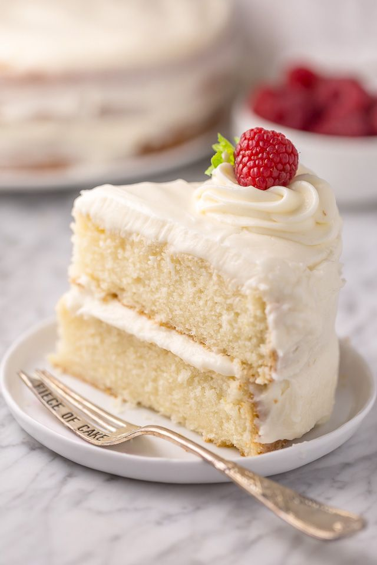

Vanilla Cakes

Description
The vanilla cake recipe is great for all occasions and easy to
make. It's the best cake I have ever made. It's not too bland, and it's
not too sweet.
Slice the cooled cake through the middle to take two layers and
frost as desired.
Ingredients
- cooking spray
- 2⅔ cups all-purpose flour, or more as needed
- 1 cup white sugar
- 1 tablespoon baking powder
- 1 tablespoon vanilla extract
- 2 pinches salt
- 3 eggs
- ¾ cup milk
- ¾ cup vegetable oil
Steps
- Preheat the oven to 350°F (175°C).
Grease a 9-inch cake tin with cooking spray and line
with parchment paper.
- Mix flour, sugar, baking powder, vanilla extract, and salt
together in a large bowl. Add eggs, milk and vegetable oil;
mix by hand or beat with an electric mixer on low speed until smooth.
Add more flour if batter is too runny. Pour into the prepared pan.
- Bake in the preheated oven until a toothpick inserted into the center of
the cakes comes out clean, about 1 hour. Cool on a wire rack for 5 minutes.
Run a table knife around the edges to loosen. Invert cake carefully onto a cooling rack.
Let cool completely.